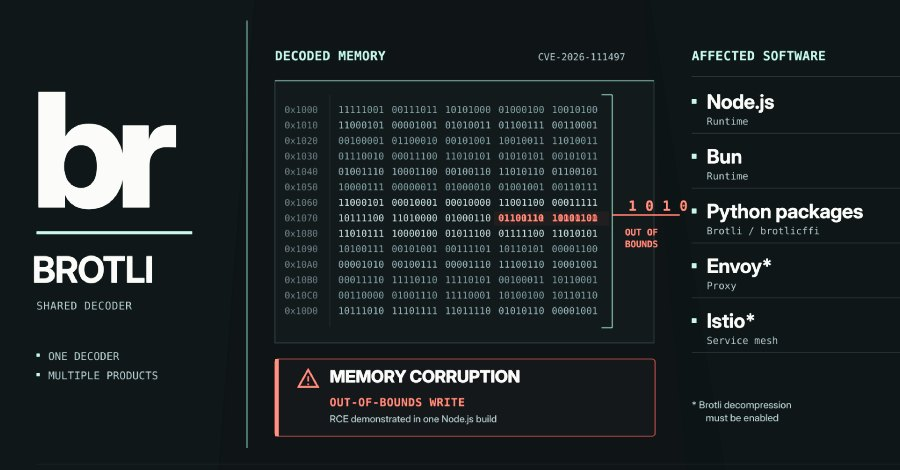
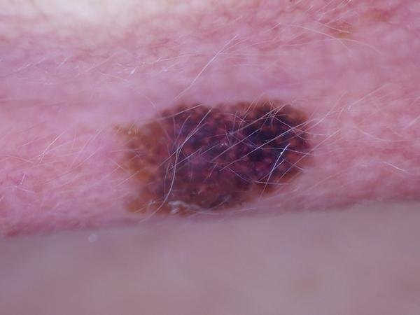

头条 一

图片来源：The Hacker NewsOpenAI 红队发现 Brotli 解码器漏洞 CVE-2026-111497：构造过的压缩数据可让未打补丁的服务器或客户端被接管。修复 2 月 27 日就进了源码，10 月 21 日才发新版。Imperva 已在一个 Node.js 构建上演示执行代码，目前未见实际攻击。
每个程序都自带一份解码器，只能各自更新。Google 评 9.2（严重），Red Hat 评 8.1。要点不是 AI 找到了洞，而是修复早就写好却没发版。
来源：The Hacker News
头条 二

图片来源：Lynch Lab（作者博客）皮肤科医生 Magnus Lynch 用 200 例活检确诊的病灶测试：十年前的 Inception v3 微调约 20 分钟，诊断对 125 例（62%）；GPT-6 Astra 和 Claude Fable 5.1 各对 84、85 例（42%）。30 例黑色素瘤里，三者分别认出 13、8、11 例。
样本只有 200 例，大模型各只跑一次，作者也说 CNN 并非最先进。它能说明的是：通用模型不等于专科工具，还会带着高置信度说错。
来源：Lynch Lab（作者博客）
头条 三
猫王音乐版权与肖像权的授权机构 Authentic Brands Group 上周五起诉 Anthropic，称其用普雷斯利 274 首歌曲训练 Claude，要求每首赔 15 万美元，合计约 4100 万美元。诉状称 Anthropic 的防护机制是事后才加的，效果不佳。
这是艺人遗产方直接起诉 AI 公司的首批重大诉讼之一。以上均为原告指控，Anthropic 的回应未见报道，案情以法院审理为准。
来源：IT 之家（转述）
修复二月就进了源码，十月才发版：漏洞的窗口，有时是发布流程拖出来的。
十岁的小模型赢了前沿大模型，赢在专门，不是更聪明。
版权官司开始由遗产方亲自来打，训练数据的账变得具体了。